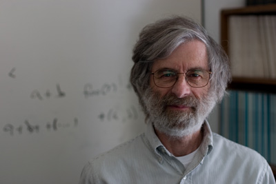
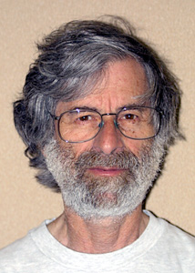

|
 Leslie Lamport in his office, May 2007 |
Leslie Lamport is a legendary figure of computing. While he is probably most well-known because of the open-source typesetting LaTeX macro package and book, arguably his most important contributions are in the domain of distributed systems; this is also the subject of this interview. This interview was conducted in April 2007. Leslie Lamport typed the answers to my questions and reviewed the final editing. I thank my colleagues who have helped me think about these questions. |
This interview is licensed under a Creative Commons Attribution License.
Q: You have always been a member of an industrial research lab. What is the difference between an industrial research lab and a university department?
A: Jean Renoir wrote in his autobiography that someone once asked his father, the painter Auguste, why he painted from nature. Renoir père answered that if he were to try painting a tree in the studio, he would be able to draw four or five different kinds of leaves, and the rest would all look like them. But nature creates millions [his count] of different kinds of trees. I like working in industry for the same reason Renoir liked to paint from nature.
Q: What was the first computer you have used/programmed?
A: The IBM 705.
Q: Your paper Time, Clocks and the Ordering of Events in a Distributed System (Lamport Clocks) (1978) taught programmers once and for all how to think about clocks. The key message had been known by physicists since Einstein: that there exist events in a computer system which do not occur one before another, (i.e., time is not a total order).
A: I hope it didn’t teach anyone once and for all how to think about clocks. For one thing, I’ve written papers describing other ways to think about them. The most important idea in that paper is thinking about distributed systems in terms of state machines — an idea that most people who read the paper seem not to notice.
Q: The clocks are really “stealing the show” in this paper, and I can understand why people can overlook the state-machine. Could you explain the essence of the state-machine idea?
A: Almost any system can be described as a state machine. So an easy way to implement a system is to describe it as a state machine and use a general algorithm for implementing state machines.
Q: The Byzantine Generals Problem paper (1982) describes the first provably correct algorithm for making several computers agree when some of them may give deliberate wrong answers. What are the its practical applications?
A: The only practical applications I know of are in real-time process control — in particular, for systems that fly airplanes.
Q: The Part-Time Parliament (Paxos), (1989 and 1998) paper shows how to make a (server) program more reliable by making several copies, which continue to operate as long as a majority of them are functioning correctly. Paxos is deployed in the Google Chubby lock server and in the Microsoft Autopilot cluster management service from Live Search. Where else is Paxos deployed?
A: The problem that Paxos solves is common to a wide range of distributed systems. The normal-case behavior of Paxos is what sensible programmers come up with when faced with the problem. If those programmers also succeeded in correctly handling the abnormal cases, then they would almost certainly have some variant of Paxos. Of course, they almost certainly won’t come up with Paxos unless they’ve already learned about it. I don’t know how many programmers have. As of a few years ago, I knew of two or three groups at Microsoft who were planning to use Paxos in their next releases. I don’t know if they did.
Q: If I understand the history right, Paxos was appreciated first by the system builders, and later by the theoretical community, despite one of its main contribution being the formal correctness proof. Why did things happen this way?
A: If that is indeed the case, then I suspect Butler Lampson was responsible. He is the only person who understood the algorithm and its significance as soon as he saw it. He advocated essentially the state machine approach and the use of Paxos as the general state-machine implementation. His influence was greater among system builders than among theoreticians.
Q: I noticed that you worked on an operating system (1962—1965). What large programs have you implemented, besides LaTeX — A Document Preparation System (1985)?
A: I haven’t implemented any programs that my colleagues would consider large (LaTeX included). People seem not to appreciate the virtues of writing small useful programs. Years ago, Butler Lampson proposed a project for capturing every keystroke and mouse click and permitting you to restore your computer to its state at any instant. This would have been a large, multi-person project. I thought that was a neat idea. Since all machine state that I ever needed to restore was contained in files that I created with Emacs, I spent an hour writing some Emacs macros that called RCS to checkpoint files whenever I saved them. (Since I grew up in the days when computers crashed frequently and am in the habit of saving the file I’m editing every minute or so, that was often enough. Otherwise, it would have been easy to do the checkpointing on some other regular basis.) I can therefore recreate the state of any of the source files I’ve written since 1993 within about a minute of any given time. I told my colleagues about my macros, but no one was ever interested. Grand projects are much more exciting.
Q: All throughout your writings you emphasize the necessity not only of coming up with sound algorithms for solving problems, but also of proving formally, mathematically, their correctness. Not just using program testing, but using mathematical reasoning for all possible circumstances. However, the currently available formal methods are unable to prove correctness of large software systems, such as real operating systems. What is your advice to software developers for bridging this gap between algorithms (which can be analyzed) and full software systems?
A: You seem to be implicitly asserting the usual argument that program verification cannot prove the correctness of a complete operating system, so it is useless for real systems. The same reasoning would hold that because you can’t implement a complete operating system in C (since you need a fair amount of assembly code), C is useless for building real systems. While this argument has obviously never been applied to C, it has in fact been used to dismiss any number of other programming languages.
People fiercely resist any effort to make them change what they do. Given how bad they are at writing programs, one might naively expect programmers to be eager to try new approaches. But human psychology doesn’t work that way, and instead programmers will find any excuse to dismiss an approach that would require them to learn something new. On the other hand, they are quick to embrace the latest fad (extreme programming, templates, etc.) that requires only superficial changes and allows them to continue doing things basically the same as before. In this context, it is only fair to mention that people working in the area of verification are no less human than programmers, and they also are very reluctant to change what they do just because it isn’t working.
The fundamental idea behind verification is that one should think about what a program is supposed to do before writing it. Thinking is a difficult process that requires a lot of effort. Write a book based on a selection of distorted anecdotes showing that instincts are superior to rational judgment and you get a best seller. Imagine how popular a book would be that urged people to engage in difficult study to develop their ability to think so they could rid themselves of the irrational and often destructive beliefs they now cherish. So, trying to get people to think is dangerous. Over the centuries, many have been killed in the attempt. Fortunately, when applied to programming rather than more sensitive subjects, preaching rational thought leads to polite indifference rather than violence. However, the small number of programmers who are willing to consider such a radical alternative to their current practice will find that thinking offers great benefits. Spending a few hours thinking before writing code can save days of debugging and rewriting.
The idea of doing something before coding is not so radical. Any number of methods, employing varying degrees of formalism, have been advocated. Many of them involve drawing pictures. The implicit message underlying them is that these methods save you from the difficult task of thinking. If you just use the right language or draw the right kind of pictures, everything will become easy. The best of these methods trick you into thinking. They offer some incentive in the way of tools or screen-flash that sugar coats the bitter pill of having to think about what you’re doing. The worst give you a happy sense of accomplishment and leave you with no more understanding of what your program is supposed to do than you started with. The more a method depends on pictures, the more likely it is to fall in the latter class.
At best, a method or language or formalism can help you to think in one particular way. And there is no single way of thinking that is best for all problems. I can offer only two general pieces of advice on how to think. The first is to write. As the cartoonist Guindon once wrote, “writing is nature’s way of showing you how fuzzy your thinking is.” Before writing a piece of code, write a description of exactly what that piece of code is supposed to accomplish. This applies whether the piece is an entire program, a procedure, or a few lines of code that are sufficiently non-obvious to require thought. The best place to write such a description is in a comment.
People have come up with lots of reasons for why comments are useless. This is to be expected. Writing is difficult, and people always find excuses to avoid doing difficult tasks. Writing is difficult for two reasons: (i) writing requires thought and thinking is difficult, and (ii) the physical act of putting thoughts into words is difficult. There’s not much you can do about (i), but there’s a straightforward solution to (ii) — namely, writing. The more you write, the easier the physical process becomes. I recommend that you start practicing with email. Instead of just dashing off an email, write it. Make sure that it expresses exactly what you mean to say, in a way that the reader will be sure to understand it.
Remember that I am not telling you to comment your code after you write it. You should comment code before you write it.
Once you start writing what your program is supposed to do, you will find that words are often a very inconvenient way to express what you want to say. Try describing the mean of a set of numbers in words. If you succeed in describing it precisely and unambiguously, you’ll find that you’ve written a formula as a sentence. This is a silly thing to do. In a great many cases, mathematics is a much more convenient language than English for describing what a piece of code is supposed to do. However, it is only a convenient language if you are fluent in it. You are undoubtedly fluent in arithmetic. You have no trouble understanding
The mean of the numbers a1, … , an equals (a1 + … + an) / n.
The kinds of things you need to describe in programming require more than simple arithmetic. They also require simple concepts of sets, functions, and logic. You should be as familiar with these concepts as you are with arithmetic. The way to achieve familiarity with them is the same way you did with arithmetic: lots of practice.
As you get better at using math to describe things, you may discover that you need to be more precise than mathematicians usually are. When your code for computing the mean of n numbers crashes because it was executed with n = 0, you will realize that the description of the mean above was not precise enough because it didn’t define the mean of 0 numbers. At that point, you may want to learn some formal language for writing math. But if you’ve been doing this diligently, you will have the experience to decide which languages will actually help you solve your problem.
Q: You performed an interesting experiment analyzing quicksort implementations that you found on the web using a search engine.
A: I did a Web search on “quick sort” and tested the first 10 actual algorithms that came up. Half of them were wrong. Every one that was written in pseudo-code, and hence could not have been tested, was wrong. Not one Web page made any attempt to show that the algorithm worked, although several of those pages were notes from computer science courses [at universities].
Q: You have written a book (2002) and many papers about TLA+, which is a very high-level specification language. What is TLA+ good for, and what isn’t it good for?
A: TLA+ is good for writing formal, high-level descriptions of certain aspects of concurrent and distributed systems. The major part of TLA+ (in terms of the number of constructs and operators) consists of a language for ordinary math. Since ordinary math is wonderful for a great many things, TLA+ is potentially useful for any task that requires very rigorous mathematical statements. For which of those tasks it is actually good is something that can only be discovered by trying.
Q: Should programmer’s and computer science education emphasize distributed system concepts more in the Internet era? What are some of the fundamental concepts one should internalize?
A: I’ve spent much of my career in search of fundamental concepts. I haven’t found any that compare with concepts such as energy and momentum in physics. There are a few results that seem to be of fundamental importance, such as the Fischer, Lynch, Patterson theorem. One important concept that is underappreciated in the world of distributed systems is that of invariance.
Q: Is invariance used in distributed algorithms in a different way from traditional algorithms?
A: It’s used in the same way as for any concurrent algorithm. The term invariant is used somewhat differently when talking about sequential algorithms — meaning an assertion that is true when control is at some point in the program rather than one that is true at all times.
Q: What software tools do you use in your day to day work?
A: Emacs, LaTeX, SANY (the TLA+ parser) and TLC (the TLA+ model checker).
Q: What hard open problems are there remaining in distributed systems?
A: On the theory side, recognizing a problem has generally been harder than solving it. Since you are asking about problems that are already recognized to be problems, the answer is probably none. On the practical side, I don’t think I have any more insight into that than most other people.
|
 Photo (c) Keith Marzullo, 2003 |
Q: A big part of your research effort seems to be building the appropriate abstraction of reality, which is accurate enough to model essential details, but also precise enough to be modeled mathematically. How does one learn the art of abstraction? A: An engineer at Intel once told me that writing TLA+ specs taught them to think more abstractly about their systems, which improved their designs. But I don’t know if that made them any better at looking at a completely new situation and abstracting its essence. It’s probably a skill one is either born with or learns at an early age. Q: Did you get lots of fan email because of LaTeX? A: Perhaps one or two a week. Q: What are some things you would do if you were without access to a computer for three months? A: Think and try to find some pencils and paper. |